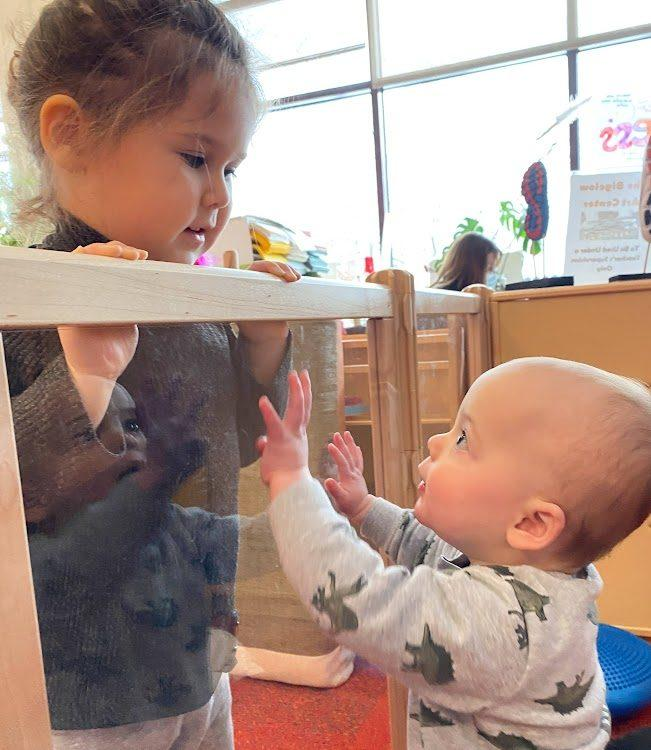
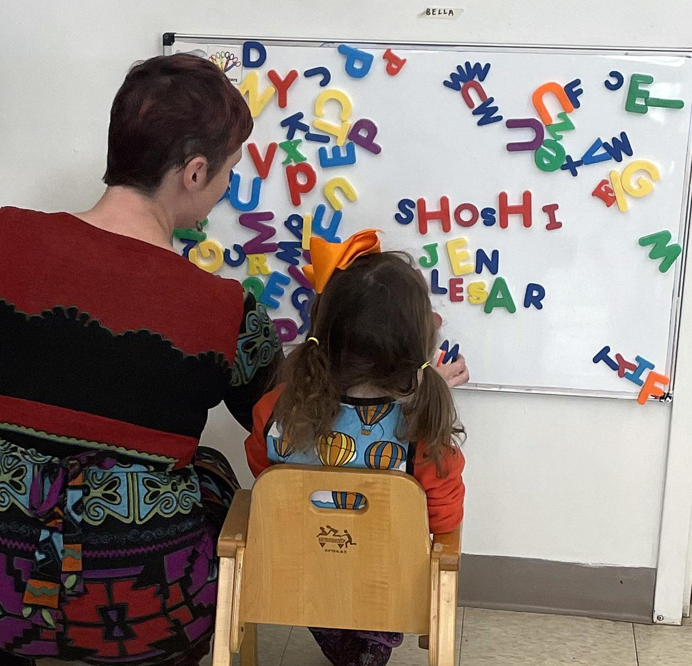
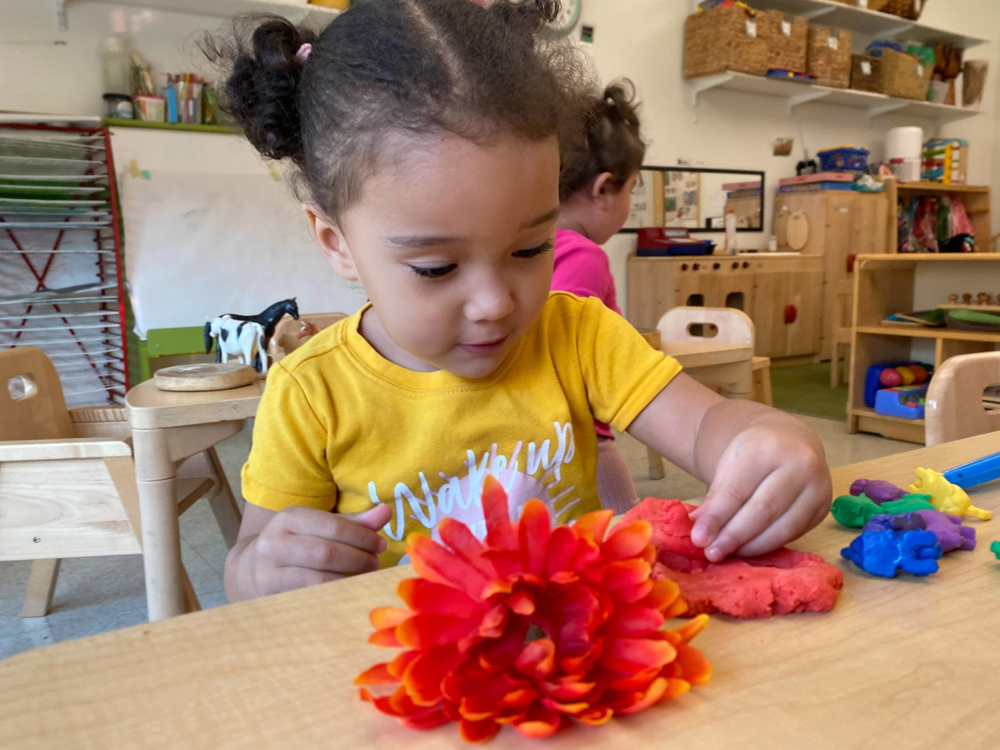
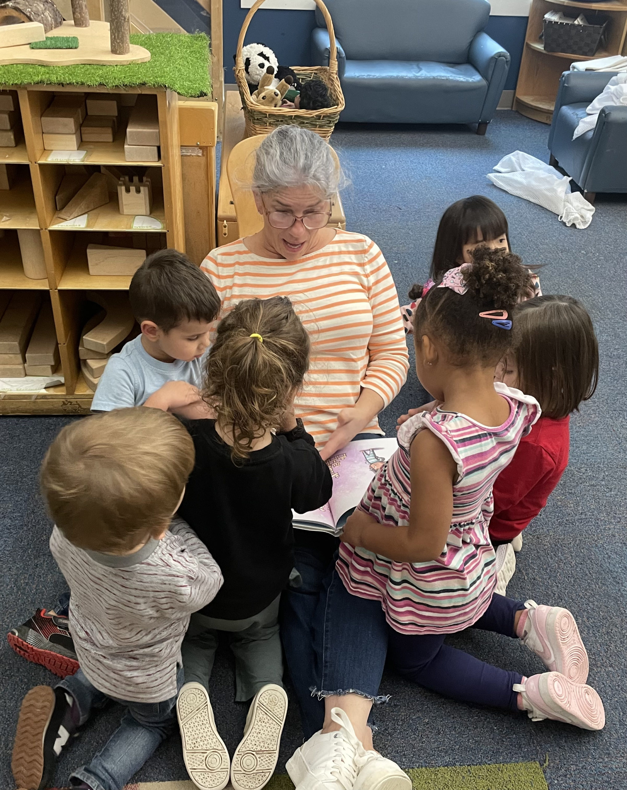
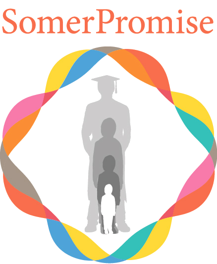

About Bigelow
Founded in 1983 by five Somerville families, Bigelow is a parent-cooperative daycare built on the belief that children thrive when families are genuinely part of the school.
In the spring of 1983, five families founded the Bigelow Play Group in a house on Bigelow Street in Somerville. Parents took turns caring for each other's children, made decisions together, and shared every task equitably — from teaching to housekeeping to policy-setting. From the very beginning, Bigelow was built as a community, not just a school.
The program incorporated in 1985 and grew steadily from there. In August 2012, Bigelow moved into its current state-of-the-art facility at 44 Park Street — a building designed from the ground up with children in mind, flooded with natural light, with five classrooms, an indoor gross motor room, a library, and a dedicated outdoor play space.
Over forty years later, the founding instincts remain intact: children are capable learners, families are partners, and a school is only as good as the community around it.

Bigelow's approach is Reggio Emilia-inspired and play-based. We treat children as competent, capable individuals — not empty vessels to fill, but active participants in their own learning. Our emergent, theme-based curriculum follows children's interests, letting what captivates them shape what happens in the classroom.
Young children express ideas in many ways: through words, movement, drawing, building, music, and dramatic play. Our curriculum makes room for all of them. Activities are integrated across literacy, math, science, social studies, and the arts — with room for different learning styles and paces at every stage.
At the heart of it is a deep commitment to equity and inclusion. Bigelow's anti-bias curriculum reflects a belief that every child deserves to thrive — and that empathy, modeled and practiced from infancy, is the foundation of both intellectual and social growth.

Bigelow is a working cooperative — which means families are genuine partners in the life of the school, not just customers of it. Every enrolled family participates in the classroom on a regular schedule, spending time alongside teachers: reading, playing, and supporting the learning environment. Single-parent families are exempt from the classroom participation requirement, and families who are unable to meet work shift expectations are encouraged to speak with the director about alternative ways to contribute.
Beyond the classroom, each family joins one of Bigelow's working committees — groups that take on real responsibility for areas like curriculum, hiring, finance, physical space, and community events. Committees meet regularly and report back to the full community.
Parents and teachers gather throughout the year to set policy together — from curriculum questions to staffing and budget. Decisions are consensus-based. Families often say that this level of involvement becomes one of the most meaningful parts of their time at Bigelow.

Bigelow teachers are selected for their ability to observe children carefully, ask the right questions, and create environments where curiosity can flourish. They document children's work, track development thoughtfully, and treat each child as an individual with their own pace and personality.
Our child-to-teacher ratios meet and often exceed the requirements of the Massachusetts Department of Early Education and Care. But ratios only tell part of the story — the deeper measure is how well a teacher knows the children in their care. At Bigelow, that knowledge runs deep.

Bigelow partners with the City of Somerville through SomerPromise and the Somerville Partnership for Young Children (SPYC) to align our preschool curriculum with Somerville Public Schools and to support families accessing city tuition assistance programs. It's part of our commitment to being a school that serves the whole community — not just families who can easily afford private care.
Learn about SomerPromise →
Visit a classroom, meet our teachers, and get a feel for the community.